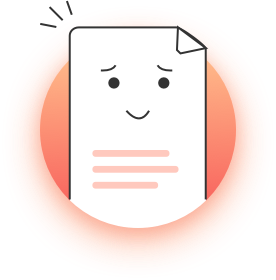

{{item.level}}
{{item.nickname ? item.nickname : "--" }}
与我关系({{item.relation}})
本月所得收入
¥{{item.money}}
{{item.nickname ? item.nickname : "--" }}
{{item.level}}
{{showList == 2 ? '好友直属人数' : (showList == 3 ? '好友二级人数' : '--')}}
{{showList == 2 ? item.recount : (showList == 3 ? item.childcount : '0')}}人

暂无达人 去推广吧！